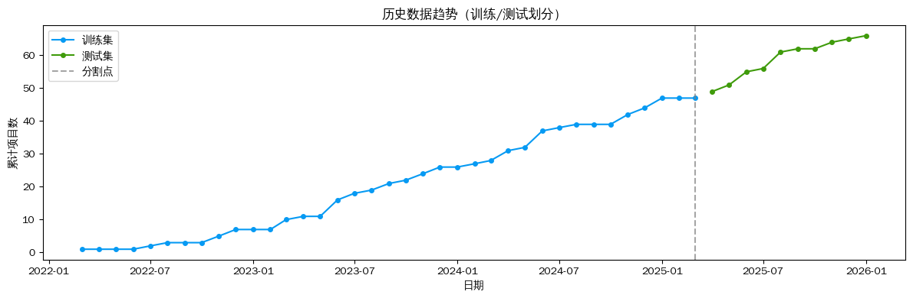
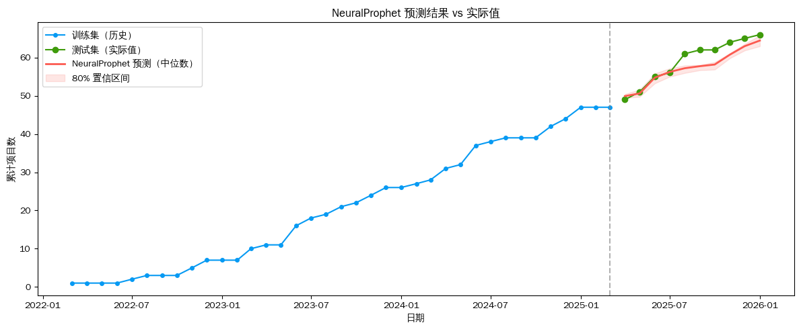

NeuralProphet 时序预测——项目数量
使用 NeuralProphet 对月度累计项目数进行预测，与同目录的 Prophet 和 Chronos-2 结果横向对比。
数据：data/project.csv（47行，月度，2022-03 ~ 2026-01）
训练集：前 80%（37行）；测试集：后 20%（10行）；预测步长：10个月
import os
# 不使用GPU
os.environ['CUDA_VISIBLE_DEVICES'] = ''
# PyTorch 2.6版本的兼容问题
os.environ['TORCH_FORCE_NO_WEIGHTS_ONLY_LOAD'] = '1'
import pandas as pd
import matplotlib.pyplot as plt
import numpy as np
import warnings
warnings.filterwarnings('ignore')
from neuralprophet import NeuralProphet, set_log_level
set_log_level('ERROR')
plt.rcParams['font.sans-serif'] = ['WenQuanYi Zen Hei', 'WenQuanYi Micro Hei']
plt.rcParams['axes.unicode_minus'] = False
df = pd.read_csv('data/project.csv')
df = df.rename(columns={'timestamp': 'ds', 'target': 'y'})[['ds', 'y']]
df['ds'] = pd.to_datetime(df['ds'])
print(f'数据行数: {len(df)}，时间范围: {df["ds"].min().date()} ~ {df["ds"].max().date()}')
df.tail(10)数据行数: 47，时间范围: 2022-03-01 ~ 2026-01-01| ds | y | |
|---|---|---|
| 37 | 2025-04-01 | 49 |
| 38 | 2025-05-01 | 51 |
| 39 | 2025-06-01 | 55 |
| 40 | 2025-07-01 | 56 |
| 41 | 2025-08-01 | 61 |
| 42 | 2025-09-01 | 62 |
| 43 | 2025-10-01 | 62 |
| 44 | 2025-11-01 | 64 |
| 45 | 2025-12-01 | 65 |
| 46 | 2026-01-01 | 66 |
# 按 80/20 划分训练集和测试集
TRAIN_RATIO = 0.8
split_idx = int(len(df) * TRAIN_RATIO)
train_df = df.iloc[:split_idx].copy()
test_df = df.iloc[split_idx:].copy()
PRED_LEN = len(test_df)
print(f'训练集: {len(train_df)} 行 ({train_df["ds"].min().date()} ~ {train_df["ds"].max().date()})')
print(f'测试集: {len(test_df)} 行 ({test_df["ds"].min().date()} ~ {test_df["ds"].max().date()})')
print(f'预测步长: {PRED_LEN} 个月')
fig, ax = plt.subplots(figsize=(12, 4))
ax.plot(train_df['ds'], train_df['y'], marker='o', markersize=4, color='xkcd:azure', label='训练集')
ax.plot(test_df['ds'], test_df['y'], marker='o', markersize=4, color='xkcd:grass green', label='测试集')
ax.axvline(x=train_df['ds'].iloc[-1], color='gray', linestyle='--', alpha=0.7, label='分割点')
ax.set_title('历史数据趋势（训练/测试划分）')
ax.set_xlabel('日期')
ax.set_ylabel('累计项目数')
ax.legend()
plt.tight_layout()
plt.show()训练集: 37 行 (2022-03-01 ~ 2025-03-01)
测试集: 10 行 (2025-04-01 ~ 2026-01-01)
预测步长: 10 个月
# NeuralProphet 月度数据配置
# n_forecasts=PRED_LEN: 一次输出全部预测步长
# n_lags=0: 关闭 AR-Net，保留季节性分解，与 Prophet 对齐
# quantiles: 输出 10%/90% 置信区间
m = NeuralProphet(
n_forecasts=PRED_LEN,
n_lags=0,
yearly_seasonality=True,
weekly_seasonality=False,
daily_seasonality=False,
seasonality_mode='additive',
quantiles=[0.1, 0.9],
trainer_config={
'accelerator': 'cpu',
'devices': 1,
},
)
metrics = m.fit(train_df, freq='MS')
print('模型训练完成')Training: | | 0/? [00:00<?, ?it/s]
Finding best initial lr: 100%|██████████| 203/203 [00:01<00:00, 123.91it/s]
Training: | | 0/? [00:17<?, ?it/s, v_num=6, train_loss=0.000298, reg_loss=0.000, MAE=0.507, RMSE=0.627, Loss=0.000326, RegLoss=0.000]
模型训练完成# 生成未来预测（make_future_dataframe 自动延伸 n_forecasts 步）
future = m.make_future_dataframe(train_df, periods=PRED_LEN)
forecast = m.predict(future)
# 提取测试期预测结果
forecast_test = forecast.tail(PRED_LEN)[['ds', 'yhat1', 'yhat1 10.0%', 'yhat1 90.0%']].reset_index(drop=True)
forecast_test.columns = ['ds', 'yhat', 'yhat_lower', 'yhat_upper']
print(f'预测期: {forecast_test["ds"].iloc[0].date()} ~ {forecast_test["ds"].iloc[-1].date()}')
forecast_testPredicting DataLoader 0: 100%|██████████| 1/1 [00:00<00:00, 187.80it/s]
预测期: 2025-04-01 ~ 2026-01-01| ds | yhat | yhat_lower | yhat_upper | |
|---|---|---|---|---|
| 0 | 2025-04-01 | 49.918129 | 49.414906 | 50.445183 |
| 1 | 2025-05-01 | 50.613052 | 49.734245 | 51.594360 |
| 2 | 2025-06-01 | 54.741825 | 53.248962 | 55.827560 |
| 3 | 2025-07-01 | 56.239037 | 54.984749 | 57.148342 |
| 4 | 2025-08-01 | 57.208935 | 55.963608 | 57.916832 |
| 5 | 2025-09-01 | 57.746605 | 56.693420 | 58.058327 |
| 6 | 2025-10-01 | 58.175434 | 56.855579 | 58.806114 |
| 7 | 2025-11-01 | 60.767967 | 59.832539 | 61.111622 |
| 8 | 2025-12-01 | 62.975014 | 61.858685 | 63.556469 |
| 9 | 2026-01-01 | 64.450653 | 62.965450 | 65.790115 |
# 绘制预测结果 vs 实际值
fig, ax = plt.subplots(figsize=(12, 5))
ax.plot(train_df['ds'], train_df['y'],
color='xkcd:azure', marker='o', markersize=4, label='训练集（历史）')
ax.plot(test_df['ds'], test_df['y'],
color='xkcd:grass green', marker='o', markersize=6, label='测试集（实际值）')
ax.plot(forecast_test['ds'], forecast_test['yhat'],
color='xkcd:coral', linewidth=2, label='NeuralProphet 预测（中位数）')
ax.fill_between(forecast_test['ds'],
forecast_test['yhat_lower'], forecast_test['yhat_upper'],
color='xkcd:coral', alpha=0.15, label='80% 置信区间')
ax.axvline(x=train_df['ds'].iloc[-1], color='gray', linestyle='--', alpha=0.6)
ax.set_title('NeuralProphet 预测结果 vs 实际值')
ax.set_xlabel('日期')
ax.set_ylabel('累计项目数')
ax.legend()
plt.tight_layout()
plt.show()
# 误差指标：MAE、RMSE、MAPE
y_true = test_df['y'].values
y_pred = forecast_test['yhat'].values
mae = np.mean(np.abs(y_true - y_pred))
rmse = np.sqrt(np.mean((y_true - y_pred) ** 2))
mape = np.mean(np.abs((y_true - y_pred) / y_true)) * 100
print('─' * 35)
print(f' MAE (平均绝对误差): {mae:.3f}')
print(f' RMSE (均方根误差): {rmse:.3f}')
print(f' MAPE (平均绝对百分误差): {mape:.2f}%')
print('─' * 35)───────────────────────────────────
MAE (平均绝对误差): 2.048
RMSE (均方根误差): 2.553
MAPE (平均绝对百分误差): 3.33%
───────────────────────────────────